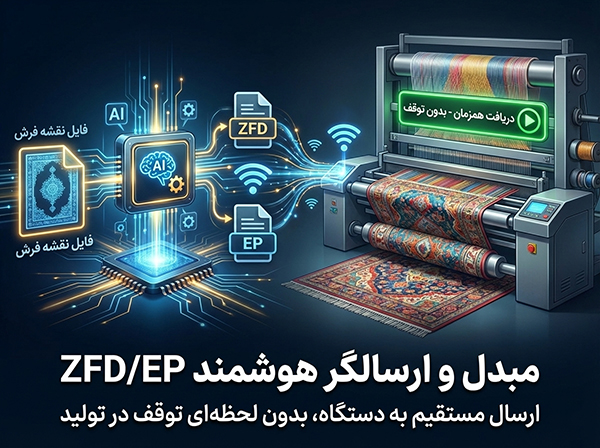
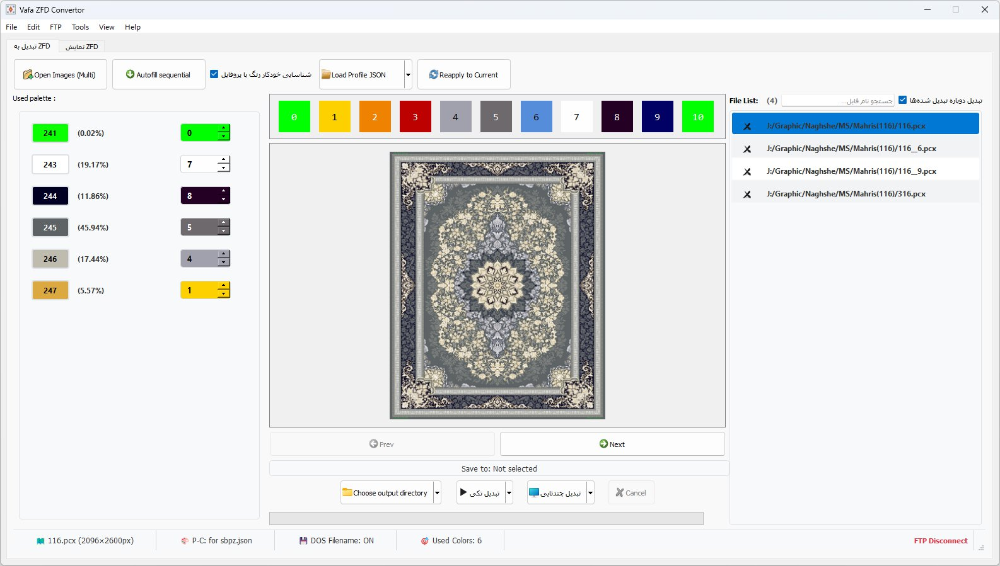
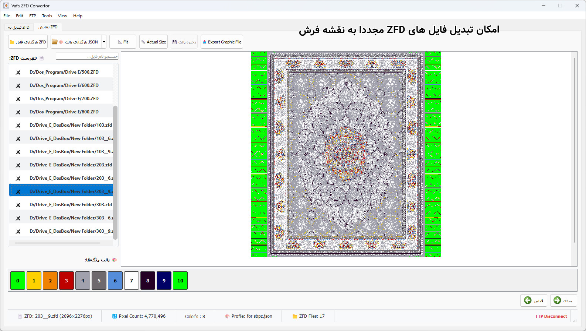
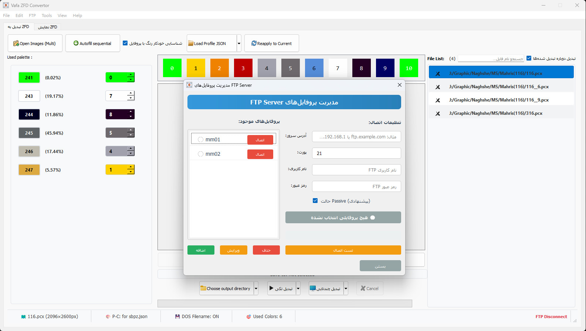
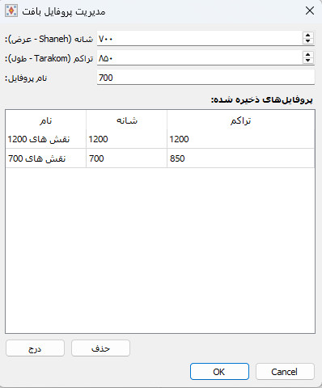
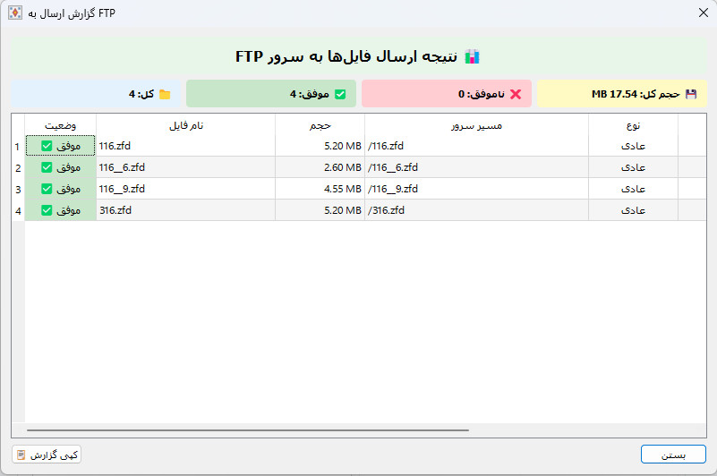
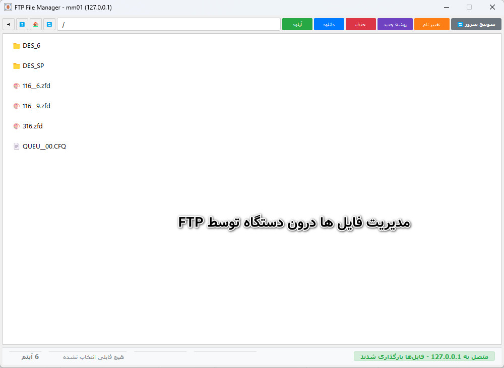

با Vafa ZFD/EP Convertor، تبدیل فرمتهای گرافیکی به فایل بافت و ارسال مستقیم به دستگاههای بافندگی را تجربه کنید. مدیریت هوشمند و بدون توقف خط تولید.

این نرمافزار راهکاری جامع برای تبدیل فایلهای نقشه فرش به فرمتهای قابل خواندن توسط دستگاههای بافندگی ZFD و EP است. با استفاده از الگوریتمهای هوشمند، تبدیل رنگها با دقت بالا و بر اساس پالت فایل انجام میشود.
یکی از ویژگیهای منحصر به فرد این برنامه، قابلیت ارسال مستقیم فایلها به دستگاه از طریق شبکه بدون نیاز به توقف دستگاه است که باعث افزایش چشمگیر راندمان تولید میشود. همچنین امکان مدیریت فایلهای موجود روی دستگاه و تبدیل معکوس فایلهای بافت به فرمتهای تصویری نیز فراهم شده است.
تبدیل انواع فرمتهای pcx, bmp, png, gif به فایلهای ZFD و EP با استفاده از پالت فایل.
ارسال مستقیم فایل به دستگاه بافندگی از طریق شبکه بدون نیاز به توقف دستگاه.
امکان تبدیل مجدد فایلهای ZFD / EP به فایلهای نقشه تصویری (bmp, pcx و...).
امکان تعریف پروفایلهای تراکم و شانه جهت ردگیری و تنظیم دقیق ابعاد نقشه.
مدیریت کامل فایلهای روی دستگاه از راه دور و از طریق شبکه.
آشنایی بیشتر با امکانات نرمافزار
نگاهی به امکانات پیشرفته و رابط کاربری مبدل ZFD/EP






برای آشنایی با قابلیتهای برنامه، نسخه آزمایشی را دانلود کنید. برای خرید نسخه کامل با ما تماس بگیرید.